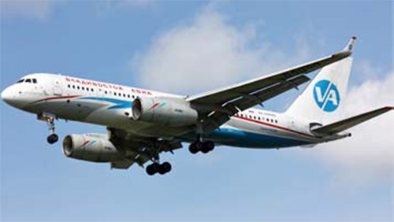

Ту-204-320

- Разработчик: ОКБ Туполева
- Страна: Россия
- Первый полет: 1995
- Тип: Дальнемагистральный пассажирский самолет
Ту-204-320 — это российский пассажирский самолёт, разработанный конструкторским бюро «Туполев». Он был создан на базе пассажирского самолёта Ту-204-100 и предназначен для перевозки грузов и пассажиров на средние и дальние расстояния.
Самолёт оснащён двумя турбовентиляторными двигателями ПС-90А или ПС-90А2, которые обеспечивают ему дальность полёта до 4000 км. Крейсерская скорость составляет 830–850 км/ч, а максимальная — 850 км/ч.
| Летно технические характеристики | |
|---|---|
| Модификация | Ту-204-320 |
| Размах крыла максимальный, м | 40.88 |
| Длина, м | 40.20 |
| Высота, м | 13.88 |
| Площадь крыла, м2 | 184.17 |
| Масса, кг | |
| - пустого самолета | 54000 |
| - нормальная взлетная | 86000 |
| Тип двигателя | 2 ТРДД Соловьев ПС-90П |
| Мощность, кгс. | 2 х 16140 |
| крейсерская скорость, км/ч | 850 |
| Практическая дальность с 1300 кг груза, км | 9250 |
| Практический потолок, м | 12100 |
| Экипаж, чел | 2 |
| Полезная нагрузка: | 99 пассажиров в кабине трех классов или 166 пассажиров в экономическом классе или 18000 кг груза |